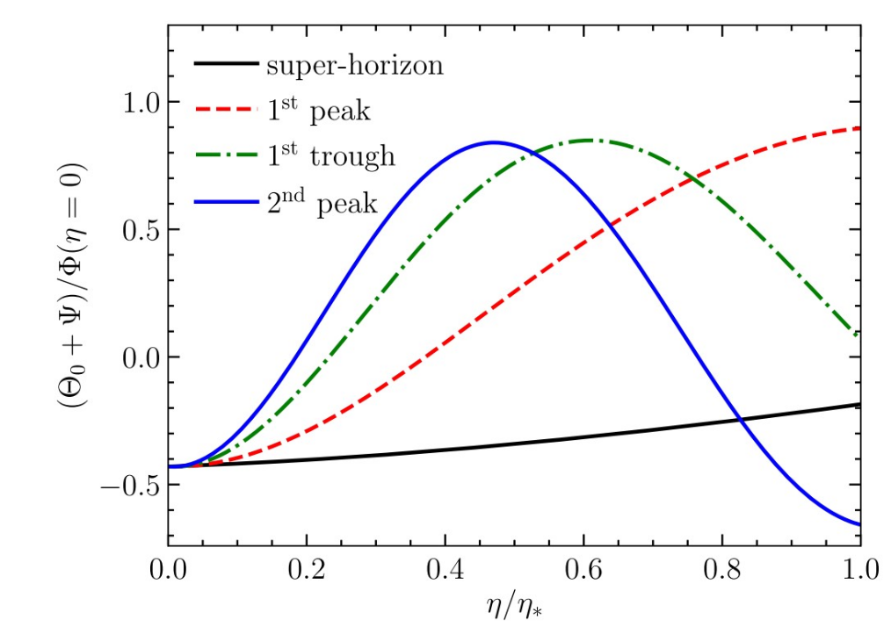
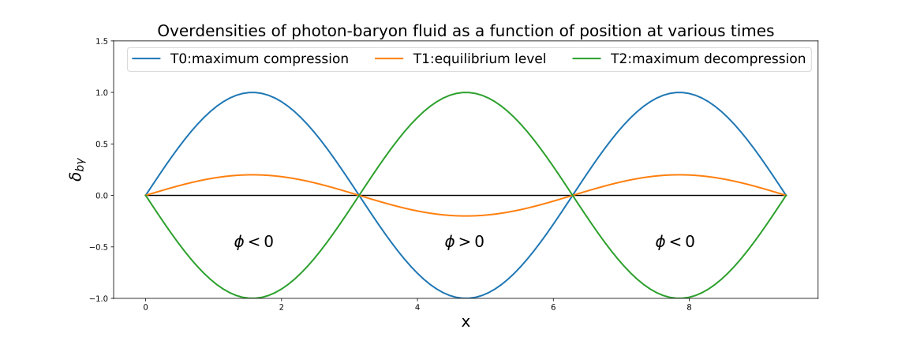

Before the recombination epoch, free electrons acted as glue between the photons and the baryons through Thomson and Coulomb scattering, so the cosmological plasma was a tightly coupled photon-baryon fluid.
Bayronic matter.
Evolution of Potential $\Phi$
Superhorizon, doesn't change much.
Subhorizon in radiation dominated era, decays.
During matter domination, $\Phi$ does not even evolve inside the horizon.
Boltzmann Equation
Boltzmann Equation for photons:
\begin{equation}
\Theta^{\prime}+i k \mu \Theta=-\Phi^{\prime}-i k \mu \Psi-\tau^{\prime}\left[\Theta_{0}-\Theta+\mu u_{\mathrm{b}}-\frac{1}{2} \mathcal{P}_{2}(\mu) \Pi\right]
\end{equation}
with
$
\boxed{\Pi=\Theta_{2}+\Theta_{P, 2}+\Theta_{P, 0}}.
$
We want to turn this differential equation for $\Theta(\eta, k, \mu)$ into an infinite set of coupled equations for $\Theta_{\ell}(\eta, k)$ (see Eq.\ref{eq:multipoles}),
so we can see that the higher moments ($\ell > 1$) are small and so can be negelected.
\begin{equation}
\Theta_{l}^{\prime}+\frac{k}{(-i)^{l+1}} \int_{-1}^{1} \frac{d \mu}{2} \mu \mathcal{P}_{l}(\mu) \Theta(\mu)=\tau^{\prime} \Theta_{l} \quad(l>2)
\end{equation}
All moments with $\ell > 1$ are very small compared to the monopole and dipole.
Explanations: The mean free path of photons is very small in the tightly coupled situation.
For large scale perturbations (small $k$, with wavelength much larger than the mean free path of photons, the photons cann't see high-order moments of the perturbation
because they can only move short distances before next scattering off electrons.)
For small scale perturbations (similiar wavelength with the mean free path, these modes are strongly damped by photon diffusion, since their wavelengths are much smaller
than the damping scale)
First look


Multipole moments
(Modern Cosmology, 2nd edition, P. 118)
\begin{equation}
\Theta_{0}(\boldsymbol{x}, t) \equiv \frac{1}{4 \pi} \int d \Omega^{\prime} \Theta\left(\hat{\boldsymbol{p}}^{\prime}, \boldsymbol{x}, t\right)
\end{equation}
The monopole $\Theta_{0}$ is an integral of the photon perturbation at any given point over all photon directions.
\begin{equation}
\Theta_{l}(k, \eta) \equiv \frac{1}{(-i)^{l}} \int_{-1}^{1} \frac{d \mu}{2} \mathcal{P}_{l}(\mu) \Theta(\mu, k, \eta)
\label{eq:multipoles}
\end{equation}
The photon perturbations can be described either by $\Theta(\mu, k, \eta)$ or by a hierarchy of moments, $\Theta_{l}(k, \eta) $.
The cosine of the angle between the wavenumber $\boldsymbol{k}$ and the photon direction $\hat{\boldsymbol{p}}$ is denoted as $\mu$ :
\begin{equation}
\mu \equiv \frac{\boldsymbol{k} \cdot \hat{\boldsymbol{p}}}{k}
\end{equation}
Multipole analysis (spherical harmonics)
\begin{equation}
\frac{\delta T}{T_{0}}(\theta, \phi)=\sum a_{\ell m} Y_{\ell m}(\theta, \phi)
\end{equation}
\begin{equation}
a_{\ell m}=\int Y_{\ell m}^{*}(\theta, \phi) \frac{\delta T}{T_{0}}(\theta, \phi) d \Omega
\end{equation}
Orthonormal functions:
\begin{equation}
\int d \Omega Y_{\ell m}(\theta, \phi) Y_{\ell^{\prime} m^{\prime}}^{*}(\theta, \phi)=\delta_{\ell \ell^{\prime}} \delta_{m m^{\prime}}
\end{equation}
Summing over the $m$ corresponding to the same multipole number $\ell$ gives the $\it{addition \ theorem}$
\begin{equation}
\sum_{m} Y_{\ell m}^{*}\left(\theta^{\prime}, \phi^{\prime}\right) Y_{\ell m}(\theta, \phi)=\frac{2 \ell+1}{4 \pi} P_{\ell}(\cos \vartheta)
\end{equation}
where $\vartheta$ is the angle between $\hat{\mathbf{n}}=(\theta, \phi)$ and $\hat{\mathbf{n}}^{\prime}=\left(\theta^{\prime}, \phi^{\prime}\right)$, i.e.,
$\hat{\mathbf{n}} \cdot \hat{\mathbf{n}}^{\prime}=\cos \vartheta .$ For $\hat{\mathbf{n}}=\hat{\mathbf{n}}^{\prime}$ this becomes
\begin{equation}
\sum_{m}\left|Y_{\ell m}(\theta, \phi)\right|^{2}=\frac{2 \ell+1}{4 \pi}
\end{equation}
We shall also need the expansion of a plane wave in terms of spherical harmonics,
\begin{equation}
e^{i \mathbf{k} \cdot \mathbf{x}}=4 \pi \sum_{\ell m} i^{\ell} j_{\ell}(k x) Y_{\ell m}(\hat{\mathbf{x}}) Y_{\ell m}^{*}(\hat{\mathbf{k}})
\end{equation}
Here $\hat{\mathbf{x}}$ and $\hat{\mathbf{k}}$ are the unit vectors in the directions of $\mathbf{x}$ and $\mathbf{k}$, and the $j_{\ell}$ are the spherical Bessel functions.
\begin{equation}
\vartheta_{\lambda}=\frac{2 \pi}{\ell}=\frac{360^{\circ}}{\ell}
\end{equation}
Define comving angular diameter diatance:
\begin{equation}
d_{A}^{c} \equiv \frac{\lambda^{c}}{\vartheta}
\end{equation}
Consider now the Fourier modes of our earlier perturbation theory discussion. A mode with comoving wavenumber $k$ has comoving wavelength $\lambda^{c}=2 \pi / k .$
Thus this mode should show up as a pattern on the CMB sky with angular size
\begin{equation}
\vartheta_{\lambda}=\frac{\lambda^{c}}{d_{A}^{c}}=\frac{2 \pi}{k d_{A}^{c}}=\frac{2 \pi}{\ell}
\end{equation}
From it we get that the modes with wavenumber $k$ contribute mostly to multipoles around
\begin{equation}
\ell=k d_{A}^{c}
\end{equation}
Exact treatment
Considering some function:
\begin{equation}
f(\mathbf{x})=\sum_{\mathbf{k}} f_{\mathbf{k}} e^{i \mathbf{k} \cdot \mathbf{x}}
\end{equation}
\begin{equation}
\begin{aligned}
a_{\ell m} &=\int d \Omega_{x} Y_{\ell m}^{*}(\hat{\mathbf{x}}) f(x \hat{\mathbf{x}}) \\
&=\sum_{\mathbf{k}} \int d \Omega_{x} Y_{\ell m}^{*}(\hat{\mathbf{x}}) f_{\mathbf{k}} e^{i \mathbf{k} \cdot \mathbf{x}} \\
&=4 \pi \sum_{\mathbf{k}} \sum_{\ell^{\prime} m^{\prime}} \int d \Omega_{x} f_{\mathbf{k}} Y_{\ell m}^{*}(\hat{\mathbf{x}}) i^{\ell^{\prime}} j_{\ell^{\prime}}(k x) Y_{\ell^{\prime} m^{\prime}}(\hat{\mathbf{x}}) Y_{\ell^{\prime} m^{\prime}}^{*}(\hat{\mathbf{k}}) \\
&=4 \pi i^{\ell} \sum_{\mathbf{k}} f_{\mathbf{k}} j_{\ell}(k x) Y_{\ell m}^{*}(\hat{\mathbf{k}})
\end{aligned}
\label{eq:ktox}
\end{equation}
The corresponding result for a Fourier transform f(\mathbf{k})is
\begin{equation}
a_{\ell m}=\frac{4 \pi i^{\ell}}{(2 \pi)^{3}} \int d^{3} k f(\mathbf{k}) j_{\ell}(k x) Y_{\ell m}^{*}(\hat{\mathbf{k}})
\end{equation}
Temperature anisotropy observed at Last Scattering Surface (Monopole and Dipole)
We can write the observed temperature anisotropy as
\begin{equation}
\left(\frac{\delta T}{T}\right)_{\mathrm{obs}}=\frac{1}{4} \delta_{\gamma}^{N}-\mathbf{v}^{N} \cdot \hat{\mathbf{n}}+\Phi\left(t_{\mathrm{dec}}, \mathbf{x}_{\mathrm{ls}}\right)+2 \int \dot{\Phi} d t
\end{equation}
Note that both the density perturbation $\delta_{\gamma}$ and the fluid velocity $\mathbf{v}$ are gauge dependent and we consider this in the conformal-Newtonian gauge,
since the $\left(\frac{\delta T}{T}\right)_{\text {jour }}$, the integrated redshift perturbation along the line of sight, is easiest to calculate in this gauge.
For large scales which are superhorizon at decoupling,
\begin{equation}
\begin{aligned}
\left(\frac{\delta T}{T}\right)_{\mathrm{obs}} &=-\frac{2}{3} \Phi\left(t_{\mathrm{dec}}, \mathrm{x}_{\mathrm{ls}}\right)+\Phi\left(t_{\mathrm{dec}}, \mathrm{x}_{\mathrm{ls}}\right)+2 \int \dot{\Phi} d t \\
&=\frac{1}{3} \Phi\left(t_{\mathrm{dec}}, \mathrm{x}_{\mathrm{ls}}\right)+2 \int \dot{\Phi} d t
\end{aligned}
\end{equation}
The former is called Sachs-Wolfe effect, and the latter is the integrated Sachs-Wolfe effect.
For small scales, the baryon-photon fluid oscillates in these potential wells caused by the CDM. The potential $\Phi$ evolves at first but then becomes constant as the universe becomes matter dominated.
From Eq.\ref{eq:multipoles}, we can get the equation governing acoustic oscillations of the photon-baryon fluid,which is a second-order ordinary differential equation
\begin{equation}
\begin{array}{r}
\Theta_{0}^{\prime \prime}+\frac{a^{\prime}}{a} \frac{R}{1+R} \Theta_{0}^{\prime}+k^{2} c_{s}^{2} \Theta_{0}=F(k, \eta), \\
F(k, \eta) \equiv-\frac{k^{2}}{3} \Psi-\frac{a^{\prime}}{a} \frac{R}{1+R} \Phi^{\prime}-\Phi^{\prime \prime}
\end{array}
\end{equation}
In the tightly-coupled limit, we can have two homogeneous solutions
\begin{equation}
S_{1}(k, \eta)=\sin \left[k r_{s}(\eta)\right] ; \quad S_{2}(k, \eta)=\cos \left[k r_{s}(\eta)\right]
\label{eq:homo}
\end{equation}
where
\begin{equation}
r_{s}(t) \equiv \int_{0}^{\eta} c_{s} d \eta=\int_{0}^{t} \frac{c_{s}(t)}{a(t)} d t
\end{equation}
We call this quantity $r_s(t)$ the sound horizon at time t, since it represents the comoving distance sound(the perturbation) has traveled by time t.
The tightly-coupled solution for the photon temperature can be constructed from the homogeneous solutions Eq.\ref{eq:homo},
\begin{equation}
\begin{array}{l}
\Theta_{0}(\boldsymbol{k}, \eta)+\Phi(\boldsymbol{k}, \eta)=C_{1}(\boldsymbol{k}) S_{1}(\eta)+C_{2}(\boldsymbol{k}) S_{2}(\eta) \\
+\frac{k^{2}}{3} \int_{0}^{\eta} d \tilde{\eta}[\Phi(\boldsymbol{k}, \tilde{\eta})-\Psi(\boldsymbol{k}, \tilde{\eta})] \frac{S_{1}(\tilde{\eta}) S_{2}(\eta)-S_{1}(\eta) S_{2}(\tilde{\eta})}{S_{1}(\tilde{\eta}) S_{2}^{\prime}(\tilde{\eta})-S_{1}^{\prime}(\tilde{\eta}) S_{2}(\eta)} .
\end{array}
\end{equation}
We fix the constants $C_{1}$ and $C_{2}$ in Eq. (9.25) by matching to the initial conditions, when both $\Theta_{0}$ and $\Phi$ are constants.
Since $\Theta_{0}^{\prime}$ and $\Phi^{\prime}$ vanish initially, the coefficient of the sine term $C_{1}$ must vanish.
Then we have $C_{2}(\boldsymbol{k})=\Theta_{0}(\boldsymbol{k}, 0)+\Phi(\boldsymbol{k}, 0)$.
We finally have
\begin{equation}
\begin{array}{l}
\Theta_{0}(\boldsymbol{k}, \eta)+\Phi(\boldsymbol{k}, \eta)=&\left[\Theta_{0}(\boldsymbol{k}, 0)+\Phi(\boldsymbol{k}, 0)\right] \cos \left(k r_{s}\right) \\
&+\frac{k}{\sqrt{3}} \int_{0}^{\eta} d \tilde{\eta}[\Phi(\boldsymbol{k}, \tilde{\eta})-\Psi(\boldsymbol{k}, \tilde{\eta})] \sin \left[k\left(r_{s}(\eta)-r_{s}(\tilde{\eta})\right)\right]
\label{eq:monopole}
\end{array}
\end{equation}
Eq. \ref{eq:monopole} is an expression for the anisotropy in the tightly-coupled limit, first derived by Hu and Sugiyama (1995). It shows the characteristic features of the initial conditions from inflation,
which only excite the cosine mode. This follows directly from the fact that perturbations were generated when they exited the horizon during inflation, and remained constant outside the horizon.
The pure-cosine initial conditions lead to the coherent oscillations in $\Theta+\Phi$. Alternative scenarios, which generate the perturbations when the modes enter the horizon,
would typically predict that both sine and cosine modes are present. In that case, there would not be a clear peak/trough structure in $\Theta_{0}$.
At the decoupling oscillations for scales $k$ which have
$$
k r_{s}\left(t_{\mathrm{dec}}\right)=m \pi
$$
$(m=1,2,3, \ldots)$ are at their extreme values (maximum compression or maximum decompression). Therefore we see strong structure in the CMB anisotropy today at the multipoles ($j_l(kx)$ peaks at $l \sim kx$)
$$
\ell=k d_{A}^{c}\left(t_{\mathrm{dec}}\right)=m \pi \frac{d_{A}^{c}\left(t_{\mathrm{dec}}\right)}{r_{s}\left(t_{\mathrm{dec}}\right)} \equiv m \ell_{A}
$$
corresponding to these scales and here $d_{A}^{c}\left(t_{\mathrm{dec}}\right)$ is the comoving distance from us to the last scattering surface.
$$
\ell_{A} \equiv \pi \frac{d_{A}^{c}\left(t_{\mathrm{dec}}\right)}{r_{s}\left(t_{\mathrm{dec}}\right)} \equiv \frac{\pi}{\vartheta_{s}}
$$
is the acoustic scale in multipole space and
\begin{equation}
\vartheta_{s} \equiv \frac{r_{s}\left(t_{\mathrm{dec}}\right)}{d_{A}^{c}\left(t_{\mathrm{dec}}\right)}
\end{equation}
is the sound horizon angle, i.e., the angle at which we see the sound horizon on the last scattering surface. So $m=1$ corresponds to the first peak in the CMB angular power spectrum which is the size of sound horizon.
In addition to the monopole, the photon distribution has a nonnegligible dipole at
recombination.
\begin{equation}
\begin{aligned}
\Theta_{1}(\boldsymbol{k}, \eta)=& \frac{1}{\sqrt{3}}\left[\Theta_{0}(\boldsymbol{k}, 0)+\Phi(\boldsymbol{k}, 0)\right] \sin \left(k r_{s}\right) \\
&-\frac{k}{3} \int_{0}^{\eta} d \tilde{\eta}[\Phi(\boldsymbol{k}, \tilde{\eta})-\Psi(\boldsymbol{k}, \tilde{\eta})] \cos \left[k\left(r_{s}(\eta)-r_{s}(\tilde{\eta})\right)\right]
\end{aligned}
\end{equation}
the first term is completely out of phase with the monopole.